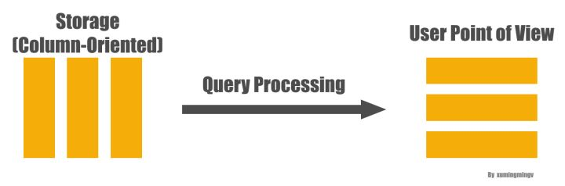
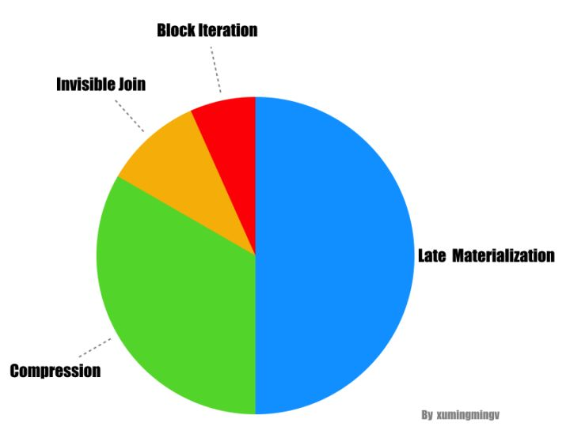

概述
从论文的标题可以看出这篇论文不是陈述一种新的技术、架构，而更偏议论文一点，它主要的目的在于搞清楚对于分析类的查询为什么Column-Store比Row-Store好那么多？好在哪里？一般认为原因是:
分析类查询往往只查询一个表里面很少的几个字段，Column-Store只需要从磁盘读取用户查询的Column，而Row-Store读取每一条记录的时候你会把所有Column的数据读出来，在IO上Column-Store比Row-Store效率高很多，因此性能更好。
而本文的目的是要告诉你Column-Store在存储格式优势只是一方面，如果没有查询引擎上其它几个优化措施的配合，性能也不会太好的，这篇论文认为Column-Store在查询引擎层有以下几种大的优化手段:
- 块遍历(Block Iteration)
- 压缩(Compression)
- 延迟物化(Late Materialization)
- Invisible Join
其中前三点是前人就已经总结过的、在现有Column-Store上实现过了的，而最后一点是本论文的创新。下面我们一一看一下这几种优化手段的细节，最后再看看它们优化效果的对比。
四大优化策略详解
块遍历
块遍历(Block Iteration)是相对于单记录遍历(per-tuple iteration)而言的，其实说白了就是一种批量化的操作。单记录遍历的问题在于对于每个条数据，我们都要从Row数据里面抽取出我们需要的column(针对Row-Store来说)，然后调用相应的函数去处理，函数调用的次数跟数据的条数成是 1:1的，在大数据量的情况下这个开销非常可观。而块遍历，因为是一次性处理多条数据，函数调用次数被降下来，当然可以提高性能。
这种提高性能的方法在Row-Store里面是case-by-case实现的(不是一种共识), 而对于Column-Store来说已经形成共识，大家都是这么做的。而如果column的值是字节意义上等宽的，比如数字类型，Column-Store可以进一步提高性能，因为查询引擎要从一个Block里取出其中一个值进行处理的时候直接用数组下标就可以获取数据，进一步提升性能。而且以数组的方式对数据进行访问使得我们可以利用现代CPU的一些优化措施比如SIMD(Single Instruction Multiple Data)来实现并行化执行，进一步提高性能。
压缩
压缩这种优化的方法对于Column-Store比对Row-Store更有效，原因很简单，我个人对压缩的理解是:
对数据进行更高效的编码, 使得我们可以以更少的空间表达相同的意思。
而能够进行更高效编码的前提是这个数据肯定要有某种规律，比如有很多数据一样，或者数据的类型一样。而Column-Store正好符合这个特点，因为Column-Store是把同一个Column – 也就是相同类型的数据保存在一起，当然比Row-Store把一条记录里面不同类型的字段值保存在一起更有规律，更有规律意味着可以有更高的压缩比。
但是为什么压缩就能带来查询的高效呢？压缩首先带来的硬盘上存储空间的降低，但是硬盘又不值钱。它的真正意义在于：数据占用的硬盘空间越小，查询引擎花在IO上的时间就越少(不管是从硬盘里面把数据读入内存，还是从内存里面把数据读入CPU)。同时要记住的是数据压缩之后，要进行处理很多时候要需要解压缩(不管是Column-Store还是Row-Store), 因此压缩比不是我们追求的唯一，因为后面解压也需要花时间，因此一般会在压缩比和解压速度之间做一个权衡。
高压缩比的典型如Lempel-Ziv, Huffman, 解压快的典型如: Snappy, Lz2
前面提到解压缩，有的场景下解压缩这个步骤可以彻底避免掉，比如对于采用Run-Length编码方式进行压缩的数据，我们可以直接在数据压缩的格式上进行一些计算:
Run-Length的大概意思是这样的, 对于一个数字序列: 1 1 1 1 2 2 2, 它可以表达成 1x4, 2x3
这样不管进行 count (4 + 3), sum (1 x 4 + 2 x 3) 等等都可以不对数据进行解压直接计算，而且因为扫描的数据比未压缩的要少，从而可以进一步的提升性能。文中还提到对于Column-Store应用压缩这种优化最好的场景是当数据是经过排序的，道理很简单，因为如果没有经过排序，那么数据就没那么“有规律”，也就达不到最好的压缩比。
延迟物化
要理解延迟物化(Late Materialization), 首先解释一下什么是物化：为了能够把底层存储格式(面向Column的), 跟用户查询表达的意思(Row)对应上，在一个查询的生命周期的某个时间点，一定要把数据转换成Row的形式，这在Column-Store里面被称为物化(Materization)。

理解了物化的概念之后，延迟物化就很好理解了，意思是把这个物化的时机尽量的拖延到整个查询生命周期的后期。延迟物化意味着在查询执行的前一段时间内，查询执行的模型不是关系代数，而是基于Column的(我也不知道怎么更好的表达这种“模型”，如果有知道的朋友欢迎告知)。下面看个例子, 比如下面的查询:1
2
3
4SELECT name
FROM person
WHERE id > 10
and age > 20
一般(Naive)的做法是从文件系统读出三列的数据，马上物化成一行行的person数据，然后应用两个过滤条件: id > 10 和 age > 20 , 过滤完了之后从数据里面抽出 name 字段，作为最后的结果，大致转换过程如下图:
而延迟物化的做法则会先不拼出行式数据，直接在Column数据上分别应用两个过滤条件，从而得到两个满足过滤条件的bitmap, 然后再把两个bitmap做位与(bitwise AND)的操作得到同时满足两个条件的所有的bitmap，因为最后用户需要的只是 name 字段而已，因此下一步我们拿着这些 position 对 name 字段的数据进行过滤就得到了最终的结果。如下图:

发现没有？整个过程中我们压根没有进行物化操作，从而可以大大的提高效率。
总结起来延迟物化有四个方面的好处:
关系代数里面的 selection 和 aggregation 都会产生一些不必要的物化操作，从一种形式的tuple, 变成另外一种形式的tuple。如果对物化进行延迟的话，可以减少物化的开销(因为要物化的字段少了)，甚至直接不需要物化了。
如果Column数据是以面向Column的压缩方式进行压缩的话，如果要进行物化那么就必须先解压，而这就使得我们之前提到的可以直接在压缩数据上进行查询的优势荡然无存了。
操作系统Cache的利用率会更好一点，因为不会被同一个Row里面其它无关的属性污染Cache Line。
块遍历 的优化手段对Column类型的数据效果更好，因为数据以Column形式保存在一起，数据是定长的可能性更大，而如果Row形式保存在一起数据是定长的可能性非常小(因为你一行数据里面只要有一个是非定长的，比如VARCHAR，那么整行数据都是非定长的)。
Invisible Join
最后本文提出了一个具有创新性的性能优化措施: Invisible Join。Invisible Join 针对的场景是数仓里面的星型模型(Star Schema), 如果用户查询符合下面的模式就可以应用Invisible Join:
利用事实表的里面的外键跟维度表的主键进行JOIN的查询的, 最后select出一些column返回给用户。
所谓的星型模型指的是一个事实表(fact table), 周围通过外键关联一堆维度表(dimension table)的这么一种模型，

为了介绍Invisible Join的思路，我们要先介绍一下两种传统的方案，通过对比我们才能看Invisible Join方案的优点。
传统方案一: 按Selectivity依次JOIN
传统方案一最简单，按照 Selectivity 从大到小对表进行JOIN:

传统方案二: 延迟物化
方案二比较有意思, 它应用了延迟物化的策略，它先不进行JOIN，而是先在维度表上对数据进行过滤，拿到对应表的 POSITION, 然后把表的主键跟事实表的外键进行JOIN，这样我们就可以拿到两类POSITION: 事实表的POSITION和维度表的POSITION, 然后我们通过这些POSITION把数据提取出来就完成了一次JOIN, 重复以上的操作我们就可以完成整个查询。

Invisible Join详解
上面两种方案都各有各的缺点:
- 传统方案一因为一开始就做了JOIN，享受不了延迟物化的各种优化。
- 传统方案二在提取最终值的时候对很多Column的提取是乱序的操作，而乱序的提取性能是很差的(随机IO)。
下面正式介绍一下我们的主角: Invisible JOIN
Invisible JOIN其实是对传统方案二的一种优化，传统方案二的精髓在于延迟物化，但是受制于大量的值的提取还是乱序的，性能还是不是最好。Invisible JOIN把能这种乱序的值提取进一步的减少, 它的具体思路如下:
- 把所有过滤条件应用到每个维度表上，得到符合条件的维度表的主键(同时也是事实表的外键)。
- 遍历事实表，并且查询第一步得到的所有外键的值，得到符合条件的bitmap(s), 这里会有多个bitmap，因为维度表可能有多个。
- 对第二步的多个bitmap做AND操作，得到最终事实表里面符合过滤条件的bitmap。
- 根据第三步的事实表的bitmap以及第一步的符合条件的维度表的主键值，组装出最终的返回值。
如果只是这样的话Invisible JOIN可能比上面的第二种方案好不了多少，论文认为在很多时间维度表里面符合过滤条件的数据往往是连续的，连续的好处在于，它能把lookup join变成一个值的范围检查，范围检查比lookup join要快，原因很简单，范围检查只需要所算数运算就好了，不需要做lookup，因此可能大幅度的提高性能。
性能对比
从论文提供的性能对比数字来看，这几大优化策略里面延迟物化的效果最好，能够提升性能3倍以上；压缩的优化效果次之: 两倍以上；Invisible JOIN 再次之：50% 到 70%；块遍历则能性能 5% 到 50%。

而如果把这些优化手段都去掉，Column-Store的性能跟一个普通的Row-Store就没什么区别了。
总结
读这篇论文最大的收获是首先知道了到底哪些因素促使Column-Store对分析类查询性能可以大幅优于Row-Store: 延迟物化、压缩、Invisible Join以及块遍历。
特别佩服这篇论文的是很多人稍微想一下就会觉得Column-Store在分析类场景下性能优于Row-Store是天经地义的: 更少的IO，但是这篇论文详细的对各种场景进行了测试、论证，同时对Row-Store应用类似的性能优化的手段再进行测试、对比，掰开了揉碎了的分析。最终告诉我们:
Column-Store的优点不止在于它的存储格式，查询引擎层的各种优化也同样关键，而由于Row-Store本身存储格式的限制，即使在Row-Store上使用这些优化，效果也不好。